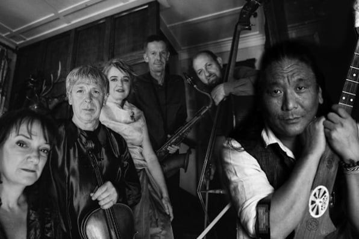
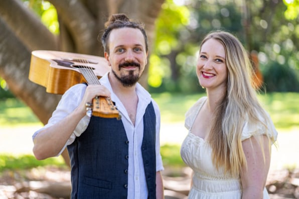
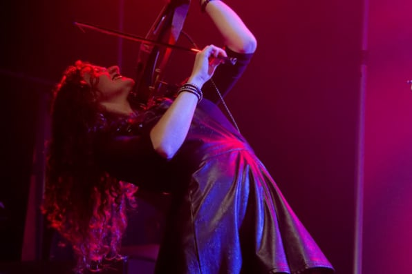
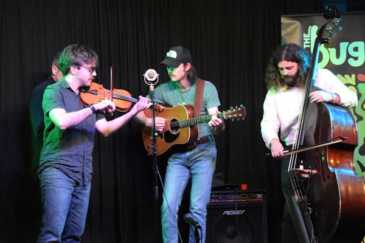

Saturday 22nd August 2026
The Gap State School MPB
Doors 5pm. Show 6:30pm.
Gaining popularity every year, the Soirée once again brings four more exciting music acts to the stage at The Gap's premier music event. Bring your friends and family to hear some of the best live music around. Browse some of the best artworks our local artists have created. Beer, wine and food also available.
Tickets $25 each or a bundle of four for $80. Proceeds support the future musicians in the instrumental and choral music programs at The Gap State School.

“Music is like drifting clouds that fly freely over the man-made geographical borders in this infinite space of possibilities.” -Tenzin Choegyal.
Infinite Space of Possibilities is a transcendent live music experience where genre-defying Topology joins forces with acclaimed Tibetan-Australian artist Tenzin Choegyal.
Soaring overtone chanting, meditative soundscapes and Topology’s unique sound of strings, saxophone and grand piano dissolves boundaries between cultures and traditions.
Performing new work composed together with Topology’s Robert Davidson and John Babbage, this event is a deeply immersive journey inviting the audience to experience the limitless potential of sound and spirit.

Through songs of life lived and lessons learned, inkind encourage us to look after ourselves and one another.
Themes of compassion, empathy and growth with a wicked sense of humour make their music both familiar and fresh, anchored in folk tradition with influences of jazz, rock and pop.
With rich harmonies, raw honesty and beautiful melodies that linger long after the last note, Erin & Nate invite audiences into a space where music fosters connection and reminds us of the power of kindness.
Inspired by amazing artists like Angus & Julia Stone, Sarah Blasko and The Seekers.

Kat Augustakis’ passion for music comes in equal measure from both her fiery Greek heritage and flaming red hair. The stage is where Kat feels most comfortable, performing all over the east coast in various acts and venues; her favourites including Moulin Rouge at the Fortitude Valley Music Hall, Dark World Festival at The Triffid, the Abbey Medieval Festival with her Celtic trio and with Michael Bublé and Hans Zimmer at the Entertainment Centre.
Kat is an active member and choreographer of DeepBlue, arranging music for their last two stage shows; and she regularly plays corporate gigs with the likes of Killer Creative and Velvet Rope Entertainment. Kat is currently working on founding her own band to follow her unique musical passion – arranging metal music for 5-string violins so she can live out her dreams of headbanging to the likes of Avenged Sevenfold and Powerwolf on a stage instead of her bedroom. Whether it be classical, traditional Celtic, pop, rock or metal music, Kat loves bringing creative needs and ideas to life!

The Highgate Hillbillies, featuring Marcus Church (guitar), Gareth Mewes (violin) and Benja King (double bass), blend traditional bluegrass roots with their own dynamic style. The trio delivers exciting and lively performances with a focus on exploring the improvisational aspects of bluegrass music.
The Gap Creative was formed in 2020 to support, enrich and share the creative heart of our suburb. The Gap is home to an amazing assortment of artisans, from painters and potters to photographers and woodworkers, and is about to shout its name from the rooftops! As an incorporated group, members benefit from the shared experiences, talent and expertise of others.
Browse an art exhibition presented by members of The Gap Creative, showcasing artworks by local artists. Artworks are available for purchase, and support the artists directly.
Established in July 2013 by Cheyene Smythe, our philosophy is to nurture the hopes and dreams of all of our students by providing them with opportunities and encouraging them to reach their full potential doing what they love.
With a focus on enjoyment, we are dedicated to delivering an exciting and encouraging environment to all our students that allows them to grow and develop. Dance assists with social, physical and emotional development and the friendships that are formed in dance class are often for life.
Follow or contact us